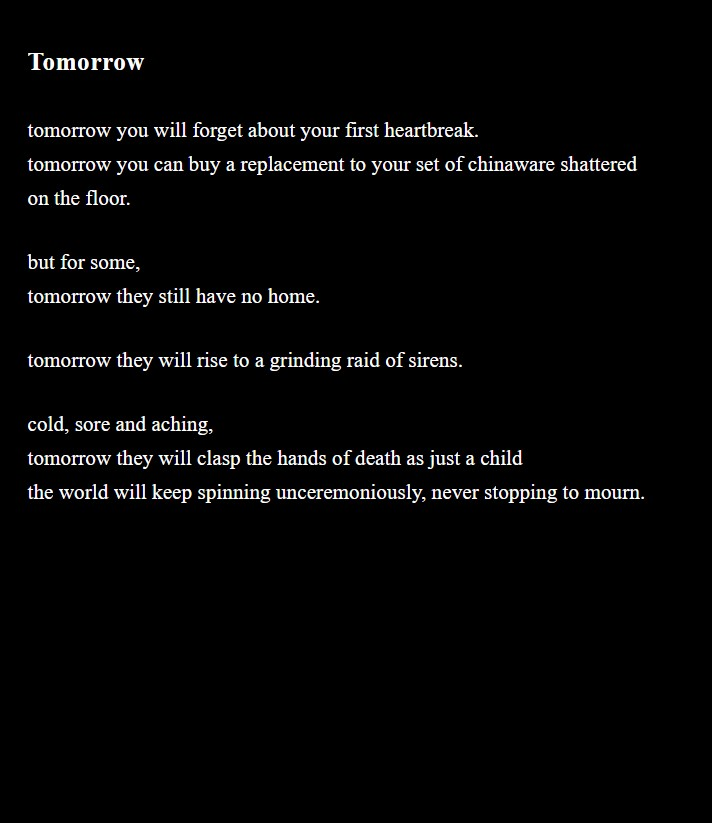

The R.A.I.N. Gallery
Artworks depicting nature and empathy for the vulnerable, for nature-based solutions to flooding. Available as printable cards.

Blossom
by Stella Kwon
Oil PaintDuring urban floods, water becomes a symbol of destruction and grief. 'Blossom' reimagines water as a serene canvas, a mirror of peace. The blossoms signal new beginnings, a reminder that after the harshest storms, serenity can bloom again.

Closer to the Ground
by Alexandra Traber
PoetryI was inspired by the floodings in Korea when I was writing this poem. It reflects the vulnerability of those who live 'closer the ground', and I used words to build empathy.

The Water That Doesn't Take
by Katherine Lee
PhotographWater can take everything — a home, a neighborhood, a sense of safety — but it can also hold the light. I wanted to photograph the version of water that people still love, the one that existed before it became something to fear, as a reminder of what resilience is actually protecting.

Tomorrow
by Claudia Van Clief
PoetryA powerful reflection contrasting everyday losses with the profound devastation of losing a home to disasters, urging us to pause and mourn with empathy.